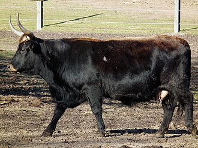

HECK
Weight:
1,000 to 1,600 pounds
Height :
4.5 to 6 feet
Length:
5 to 6 feet
Color:
light pink color
Longevity:
10 – 15 years.
Heck personality
Curious and Adventurous: Perhaps the "Heck cow" is known for its adventurous spirit, always curious to explore new environments or try different things.
Assertive and Independent: With "Heck" in its name, it might suggest a cow that is assertive and independent, unafraid to assert itself in the herd or stand out from the crowd.
What to expect
1.Hardiness: Heck cattle are often bred for their hardiness and ability to thrive in various environments. They typically have strong immune systems and can adapt well to different climates and landscapes.
2.Wild Behavior: Given their resemblance to the aurochs, Heck cattle may exhibit more wild or primitive behaviors compared to conventional domestic cattle breeds. They may be more alert, wary, and self-sufficient.
3.Agility and Vigor: Heck cattle often possess agility and vigor, traits that were characteristic of their wild ancestors. They may be more physically active and capable of navigating rough terrain.
4.Independent Nature: Heck cattle might exhibit a degree of independence, as they are bred to resemble the self-sufficient aurochs. They may be less reliant on human intervention for their survival and well-being.
5.Strong Herd Instinct: Like other cattle breeds, Heck cattle have a strong herd instinct. They tend to stick together and cooperate within their social groups, providing protection and support to one another.
History of the Heck
The "Heck cow" is a term that is commonly associated with the Heck cattle, a breed of cattle that was bred in the early 20th century in Germany. The Heck cattle were an attempt to recreate the aurochs, which was a wild ancestor of modern cattle that went extinct in the 17th century.
The Heck brothers, Heinz and Lutz Heck, who were directors of zoos in Germany during the 1920s and 1930s, undertook the project to recreate the aurochs. They aimed to breed cattle that resembled the aurochs in appearance, behavior, and ecological role..
The breeding program involved crossbreeding various modern cattle breeds, such as Spanish fighting cattle, Highland cattle, and others, in an attempt to capture the desired characteristics of the aurochs. The resulting Heck cattle were larger and more aggressive than modern domesticated cattle, with a primitive appearance reminiscent of the aurochs.